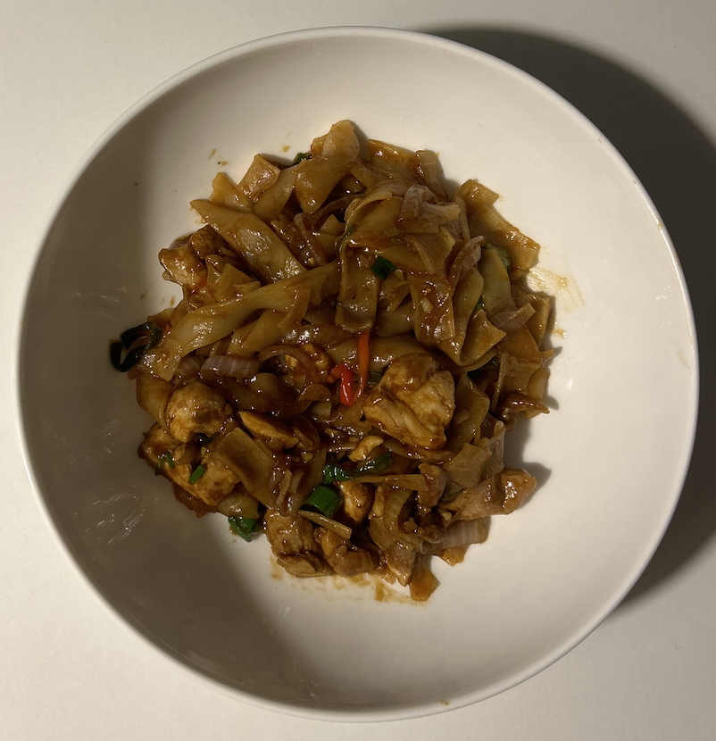

A bold, spicy noodle dish packed with garlic, chilli, fresh basil and a rich savoury sauce. Despite the name, there's no alcohol involved—just big flavours and plenty of wok heat.
This is one of my favourite weeknight meals when I want something quick that still feels like proper takeaway at home. Chicken thighs stay juicy, fresh basil brings everything together, and you can easily throw in whatever vegetables you have in the fridge.
If you've got a hot wok and everything prepped before you start cooking, dinner comes together in under 30 minutes.

4 servings
⏱ 25–30 mins • 💪 High Protein • 🍽 Base: 4 servings
Chicken thighs provide plenty of protein while remaining juicy, fresh garlic and ginger add depth of flavour and natural antioxidants, and basil brings freshness that balances the rich savoury sauce.